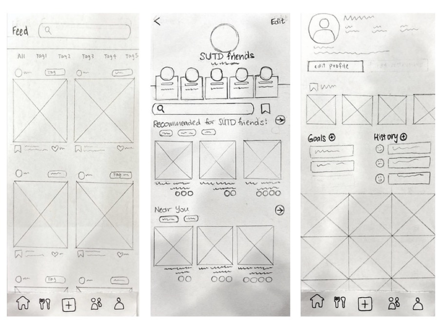
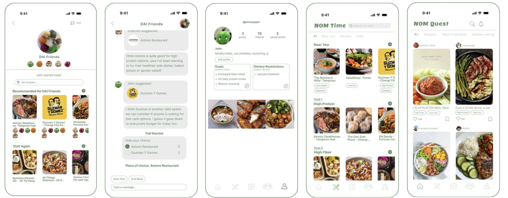
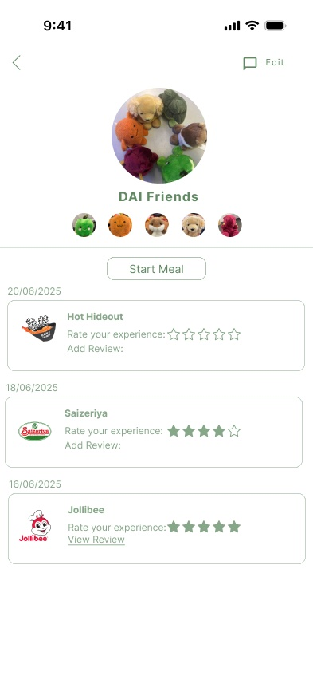
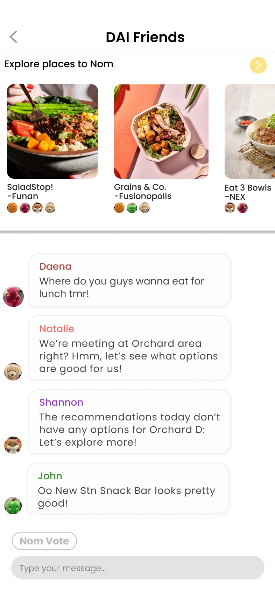
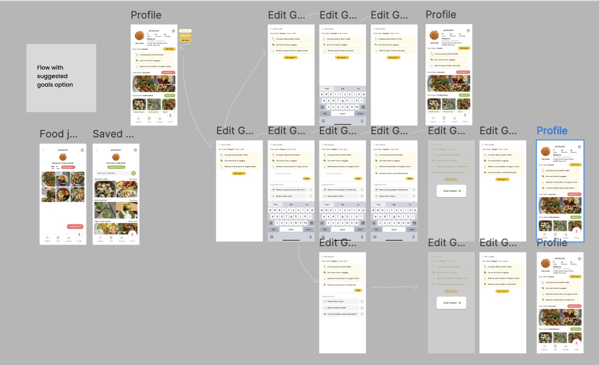
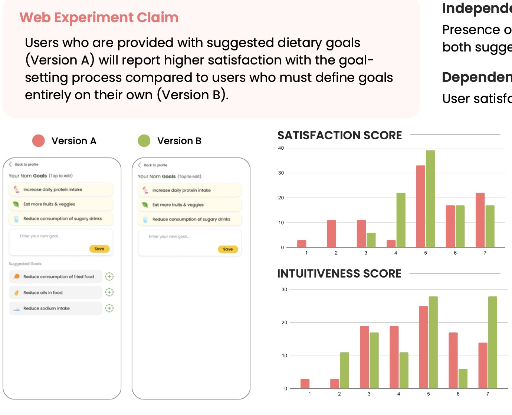
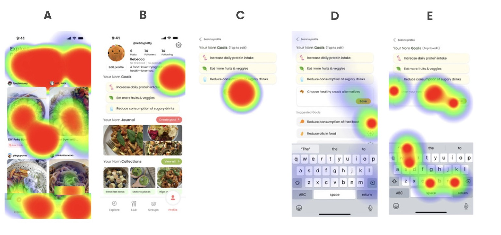

The problem
Healthy eating falls apart at lunch
We observed and interviewed 5 working adults, aged 25 to 59, about how they decide what to eat, buy and cook. They knew what healthy food looked like. What got in the way was everything around the meal.
- “When I'm with colleagues, I'll just follow what they're eating.”
- “During lunch break, I need something quick. No time to think about nutrition.”
- “I'd track my meals if it were fun or easy, like a cute self-care app.”
- Who you eat with decides what you eat. People ate lighter alone and followed the group at work or with family.
- Time beats nutrition. Short lunch breaks pushed people to whatever was closest.
- Tracking feels like homework. Calorie apps felt stressful, and the numbers were unreliable for local hawker food.
Singaporean working adults struggle to keep healthy eating habits because of hectic schedules, social pressure around meals and a lack of convenient tools to stay accountable.
Process
Three rounds, each one tested
Iteration 1 · paper prototype
The feature that broke for groups
We sketched 13 screens on paper and had 5 evaluators rate the problems against Nielsen's usability heuristics. The worst problem scored 4 out of 4. Our "Near you" feature suggested restaurants based on where each person was, so a group of friends spread across Singapore all got different suggestions for the same lunch.

- Replaced "Near you" with Set location, so a group picks one meeting point
- Let people type their own dietary restrictions instead of choosing from checkboxes
- Redrew the groups icon with three people, after evaluators mistook it for a friends list
- Split Share and Save into separate actions, and labelled who can see your goals
Iteration 2 · high-fidelity prototype
Four of our five claims were wrong
We built a 25-screen Figma prototype and ran a lab study where 5 participants worked through three realistic scenarios while thinking aloud. Before testing, we wrote down what we expected to see.
- Everyone updates their goals without a misstep4 of 5 made missteps
- Everyone finds a suitable place nearby in under 30 seconds3 of 5 took longer, unsure which page was which
- 80% follow the group meal flow as intended5 of 5 needed help
- Everyone creates a post without help4 of 5 managed it
- “Felt like no correlation between chat and starting a meal.”
- “NomQuest and NomTime are confusing. Can't tell what I'm looking at.”

Looking back at it as a team, we also saw that we'd added features one at a time until NomQuest felt like a generic food app. The next round had to bring it back to conscious eating.
Iteration 3 · redesign
Simpler, and clear about what each page is for


- Clear page titles: "Explore nom ideas" for inspiration, "Find nom places" for restaurants
- Filters for location, budget and health tags
- Saved posts moved into the profile, next to your goals and food journal
- A visible way to add friends
Iteration 3 · A/B test
We expected suggestions to help. They didn't.
Setting a dietary goal is the first thing that makes NomQuest personal, so we tested one question: does suggesting goals make goal-setting more satisfying? Version A offered suggested goals plus a text box. Version B had only the text box.

We built both versions as Maze tests and sent them to working adults through our own networks, who passed them on. 54 people took part, 36 in A and 18 in B, so we compared percentages instead of raw counts. Each person added a goal, then rated satisfaction and ease from 1 to 7.

The heatmaps helped explain why. Tapping "Add goal" opened the text box first, and the suggestions sat further down, so most people in Version A never noticed them. They typed their own goal, and found that satisfying.

Our proposed fix was to show the suggestions in place of the "Add goal" button, so people see them before they start typing.
What I learned
Test the thing you're sure about
Every round overturned something we were confident about, from the "Near you" logic to the goal suggestions. It taught me to write claims down before testing, so the results can prove us wrong, and how much a small detail like the order of two elements can change what people do.
Team: Daena, Shannon, Rebecca, Natalie Soh and John Loh, all contributing equally.